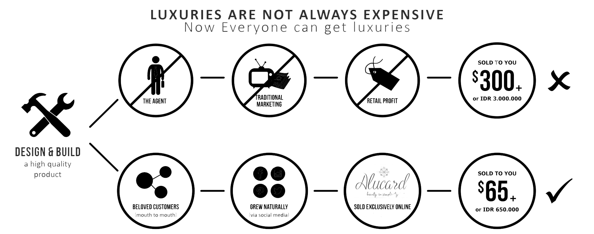

OUR STORY
Alucard As we know in the days of colonialism strength of a state seen from the area and military power. But at present the strength of a country is no longer visible from the territories and military forces. In the 21st century Indonesia are in a losing position in a new kind of warfare. You may think that the war is over? The answer is wrong. Precisely the war has entered a new phase, if the formerly war because of military problems, now turned into a new war called war economy.
WHO WE ARE?
Here is the story begins when our Founder discover amazing facts about the fashion industry, especially in the field of jewelry and watches in Indonesia. How can a large country with population of approximately 240 million with a number of islands approximately 17,504 and the number of 1,340 ethnic tribes with rich natural resources abundant Indonesia do not have the original brand.
OUR VISIONS
With new innovations are constantly being developed that our products will be a high quality product that will be able to help win the war in Indonesia from the defeat of economic problems.
OUR MISSION
The name of Alucard itself inspired from Sir Alucard one hero Camelot and one of the Knights of the Round Table. In Era, Sir Alucard is known for spirit and discipline. Therefore, we agreed to establish a company with the name Brand Alucard that the spirit and discipline can be an inspiration for us. We will also work with passion and discipline as Alucard in developing our business by creating a variety of innovative jewelry and watches that can compete overseas arena.